CRM ⇄ Desk Integration: bugs found by executing the spec
Results of executing spec-crm-desk-integration.md on staging (Run 1 read-only 19 Oct, Run 2 writes and Run 3 connection 20 Oct, approved by the user). Expected behaviour = Zoho CRM + Desk and NDC-1669 (user decision: match Zoho). Only confirmed bugs are listed; the 9 missing features are in docs/crm-desk-integration/missing-report.html. Nothing here is filed in Plane.
Each bug was seen through the API and, where it has a screen, on the screen. Test records were prefixed "QA CD" and deleted after the run; the settings were restored from the baseline and checked field by field.
CD-01 · I9 / I8High (suggested)Links
Unlink does not stop the sync: the next change links the pair again by email
After Unlink, TAVI's own dialog says "Syncing stops for this record until it is linked again." In practice the very next change on the CRM record matches the Desk contact again by email (match_source: match_existing) and the change is written to Desk. An agent cannot keep a Desk contact apart from its CRM record.
Steps to reproduce
Take a linked contact pair (Desk contact ↔ CRM contact, same email).
The record stays unlinked and the CRM change is not written to Desk, as TAVI's Unlink dialog promises ("Syncing stops for this record until it is linked again.").
Actual (TAVI)
Link back as synced / match_existing; Desk Title = the CRM value; a manual Link afterwards answers 409 "The crm record is already linked."
Records
Desk contact 1e4fa020 ↔ CRM contact f820d08f (20 Oct, deleted after the run)
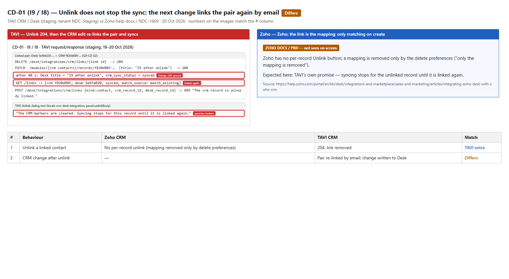
CD-01: TAVI (left) vs Zoho or the expected behaviour (right).
CD-02 · K10Medium (suggested)Handshake Mode
Handshake Mode is still offered while the sync is paused
With the integration paused, the ticket list Layout picker still lists Handshake Mode under Work Modes, so agents keep sorting tickets by CRM deal data that is no longer updated. When disconnected, the option is hidden correctly.
Desk → Tickets → All Tickets → open the Layout picker ("Classic View ▾").
Control: Disconnect, open the picker again.
Expected
Handshake Mode is removed from the picker with an explanation while paused or disconnected (NDC-1669 §8 AC). Zoho: Handshake needs the integration; pausing stops all data exchange.
Actual (TAVI)
Paused: Handshake Mode listed and selectable. Disconnected: hidden (correct).
Records
Checked twice on 20 Oct (ConnectionRunTest, K10CheckTest); status paused=true at the screenshot
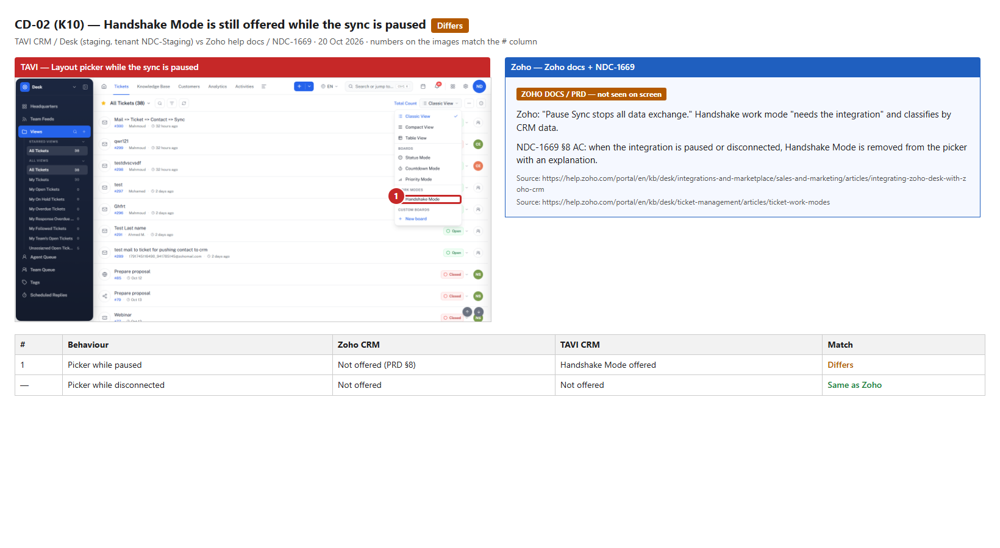
CD-02: TAVI (left) vs Zoho or the expected behaviour (right).
CD-03 · H10 / G19Medium (suggested)Failure Log
Failure Log reasons show raw record ids instead of record names
Every "already paired" failure reads "The CRM contacts record 514badee-c11a-… with the same email is already paired with Desk record cf51f6b3-cc88-…." An admin cannot tell which contacts are involved. Reproduced on 20 Oct with two Desk contacts sharing one CRM email.
Steps to reproduce
Create two Desk contacts with the same email while a CRM contact with that email exists (or pause, create, resume).
The reason names the records (e.g. "already paired with Desk contact Mahmoud Mohamed") so the admin can act (NDC-1669 §10; Zoho Failure Log shows the record and the reason).
Actual (TAVI)
Two full UUIDs in the sentence; same text in GET /failureslast_error.
Records
Failures of 18 Oct (Desk 183dc191, db172f38); 20 Oct Desk 62f23a7f (QA, discarded)
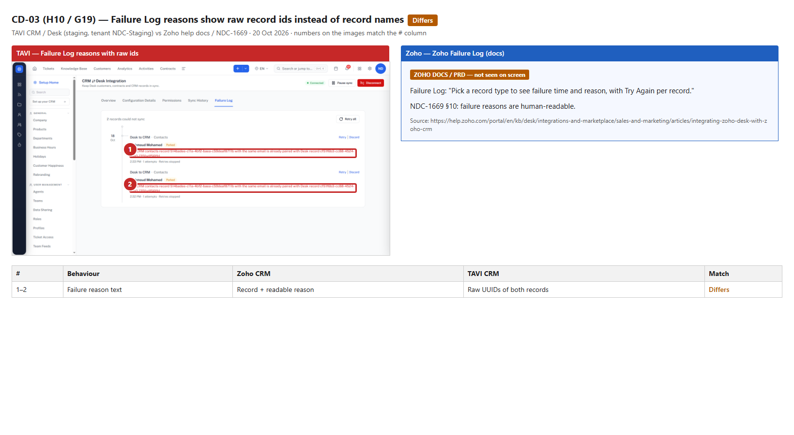
CD-03: TAVI (left) vs Zoho or the expected behaviour (right).
CD-04 · C17Medium (suggested)Field mapping
The settings API saves invalid field mappings
The mapping editor validates its rows, but PUT /desk/integrations/crm/config accepts a mapping to a CRM field that does not exist, to a Desk field that does not exist, a lookup field, and a row with an empty CRM field — all 200. Other checks (direction, enums, read-only target, one-way pair) are refused correctly with 422 CRM_SYNC_MAPPING_INVALID.
Steps to reproduce
GET the config, add one contact mapping row, PUT with the fresh row_version:
422 with the matching codes the UI already knows: crm_field_unknown, desk_field_unknown, lookup_not_mappable, incomplete ("Pick a CRM field or clear this mapping.").
Actual (TAVI)
200 for all four; the row is stored (restored right after by the test).
Records
row_version 39604617 → 39604830 (20 Oct 15:10 UTC), restored from the baseline
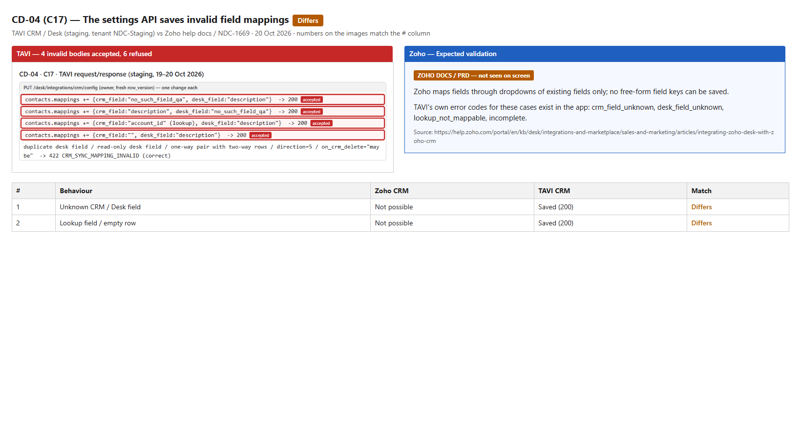
CD-04: TAVI (left) vs Zoho or the expected behaviour (right).
CD-05 · F5Medium (suggested)Save / concurrency
Settings are saved without a row_version, so the lost-update check can be skipped
A stale row_version is refused with 409 (correct), but a PUT that simply leaves row_version out is accepted and overwrites whatever another admin saved in between.
Steps to reproduce
GET /desk/integrations/crm/config.
PUT the same body without the row_version key (one harmless change).
Expected
400/409/428: the version is required, like the stale case ("Another administrator saved these settings while you were editing…").
Actual (TAVI)
200, change stored, row_version moved.
Records
20 Oct, restored right after
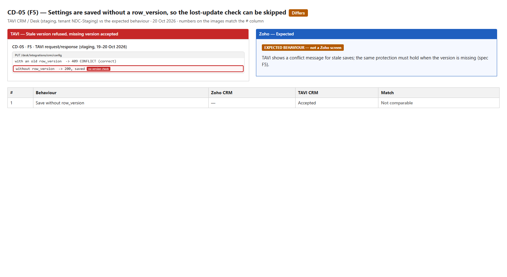
CD-05: TAVI (left) vs Zoho or the expected behaviour (right).
CD-06 · H3Medium (suggested)Sync History
Sync History has no "failed" count
Each Sync History row has only Added and Updated. Failed records are missing even when the Failure Log has entries for that day.
Steps to reproduce
Have at least one failed sync on a day (Failure Log not empty).
Desk → Settings → CRM ⇄ Desk Integration → Sync History (API GET /history?days=7).
Expected
Per day, direction and record type: added, updated and failed counts (Zoho docs; NDC-1669 §10).
Wait for the initial imports (Sync History / runs).
Check the admin's notifications.
Expected
The admin is told when the initial sync is done (NDC-1669 §4).
Actual (TAVI)
Runs initial_customers and initial_contracts finished within seconds; no notification since the connect.
Records
Connect at 2026-10-20 15:32:54 UTC (approved reconnect)
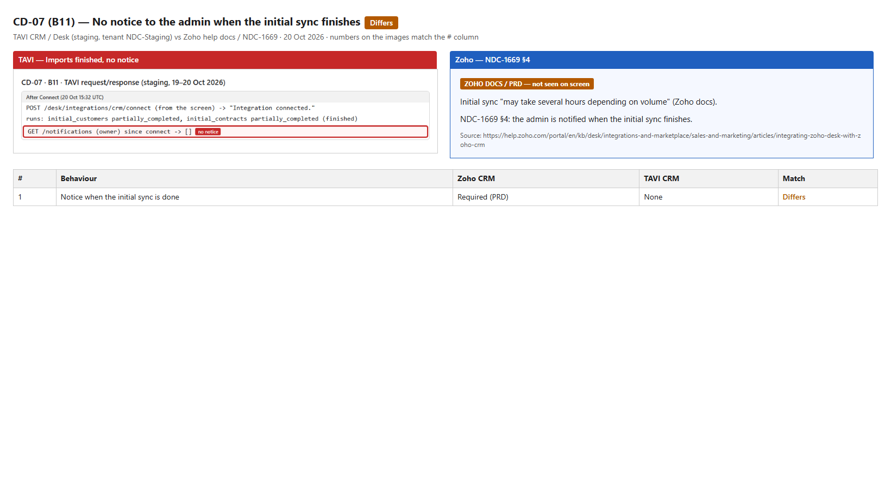
CD-07: TAVI (left) vs Zoho or the expected behaviour (right).
CD-08 · I16Low (suggested)Desk contacts list
Desk contact list shows raw sync values "synced" / "needs_attention"
Under each contact name the list shows the raw values synced and needs_attention. The app already has the labels "Synced" and "Needs attention" (used on the contact page).
Steps to reproduce
Desk → Customers → All Contacts.
Expected
Labels "Synced" / "Needs attention" / "Unlinked" (TAVI's own strings, as on the contact page).
Actual (TAVI)
Raw snake_case values.
Records
Seen 19 and 20 Oct
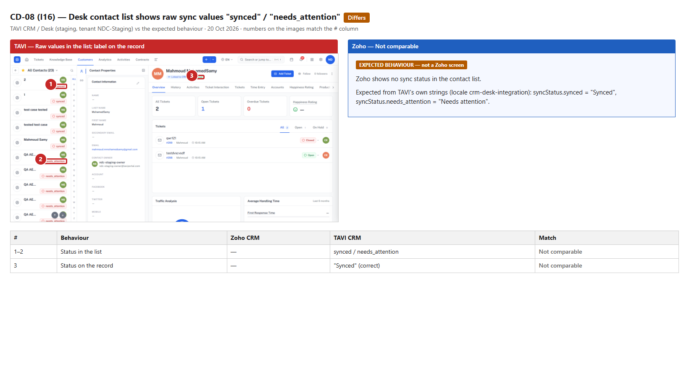
CD-08: TAVI (left) vs Zoho or the expected behaviour (right).
CD-09 · B4Low (suggested)Pause
Pause with a long reason fails with a server error
A pause reason of 1,206 characters returns HTTP 500 "An unexpected error occurred." instead of a validation message.
Steps to reproduce
POST /desk/integrations/crm/pause with {reason: "QA CD " + 1200×"x"}.
Expected
400 with the maximum length (and the UI limits the field).
Actual (TAVI)
500 INTERNAL; integration not paused.
Records
20 Oct 15:12 UTC
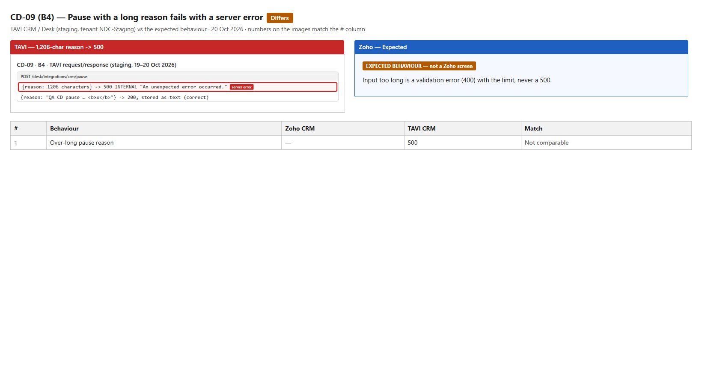
CD-09: TAVI (left) vs Zoho or the expected behaviour (right).
CD-10 · O3Low (suggested)API
Customer statistics answer 200 for a contact that does not exist
GET /desk/integrations/crm/customers/contact/{random id}/stats answers 200 with zero counts. The other record endpoints answer 404 for unknown ids.
Steps to reproduce
GET the stats endpoint with a random UUID.
Expected
404 for a record that does not exist.
Actual (TAVI)
200 with all counts 0.
Records
19 Oct (Run 1)
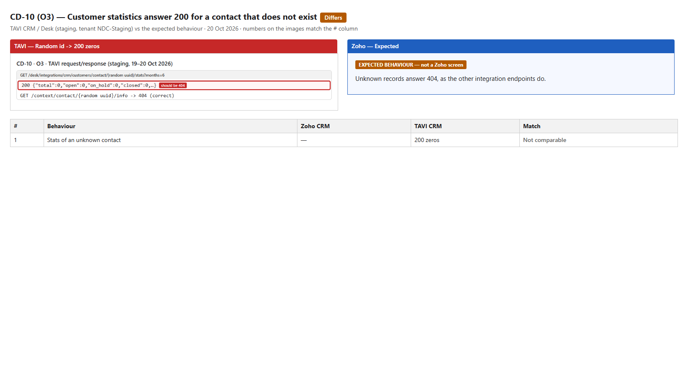
CD-10: TAVI (left) vs Zoho or the expected behaviour (right).
CD-11 · G18Medium (suggested)Sync
Sync creates a Desk contact without its mandatory Last name
The Desk contact layout requires Last name. A CRM contact without a Last name is still copied to Desk, and the Desk contact is stored with Last name empty. Zoho reports a "Mandatory field missing" failure instead, so required fields stay valid.
Steps to reproduce
Desk contact layout: Last name is required (it is on staging).
Create a CRM contact with First name and Email only.
Wait for the sync; open the Desk contact.
Expected
The record fails with a readable "mandatory field missing" reason in the Failure Log (Zoho), or Desk fills a placeholder the admin chose. A required field is never left empty.
Actual (TAVI)
Desk contact created with last_name = null; no failure.
Records
CRM e3109613 → Desk 2562f0bf (21 Oct, deleted after the run)
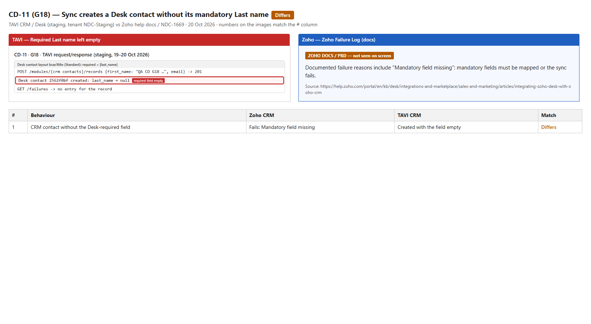
CD-11: TAVI (left) vs Zoho or the expected behaviour (right).
CD-12 · K4Medium (suggested)Handshake Mode
Handshake Mode does not match requesters by phone
A ticket whose requester matches a CRM contact only by phone is put in New (not in CRM). NDC-1669 §8 requires phone matching, and Zoho classifies by CRM email or phone.
Steps to reproduce
Create a CRM contact with a phone and no email.
Pause the sync so it is not linked by email. Create a Desk contact with the same phone and a ticket for it.
Classify the ticket (Handshake Mode / POST /tickets/classify).
Expected
Contacts/Leads, matched by phone (NDC-1669 §8 AC; Zoho: "Classification uses the CRM email or phone").
Actual (TAVI)
not_in_crm (New), both for a ticket with only the phone and for the Desk contact with that phone.
Records
21 Oct, QA records deleted after the run
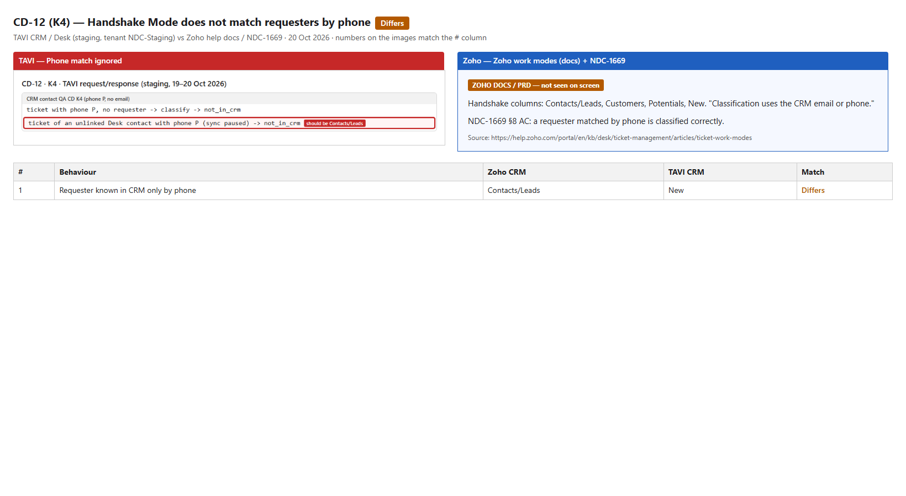
CD-12: TAVI (left) vs Zoho or the expected behaviour (right).
CD-13 · E8Medium (suggested)Delete preferences
Changing the delete preference applies to a delete made earlier
A CRM contact is deleted while "Keep the Desk contact and flag its link" is set. If the preference is changed to "Delete the corresponding Desk contact" before that delete has synced, the Desk contact is deleted. NDC-1669 §5 requires preference changes not to be retroactive. Reproduced twice (21 Oct).
Pause sync (or have a busy queue). Delete a linked QA CRM contact.
Change the preference to "Delete the corresponding Desk contact" and save.
Resume; wait 45 s; open the Desk contact.
Expected
The delete keeps the preference in force when it happened (Keep): the Desk contact stays, its link flagged. NDC-1669 §5 AC: not retroactive.
Actual (TAVI)
The Desk contact is deleted under the new preference.
Records
QA CD E8 contacts (21 Oct, two runs), deleted after the runs
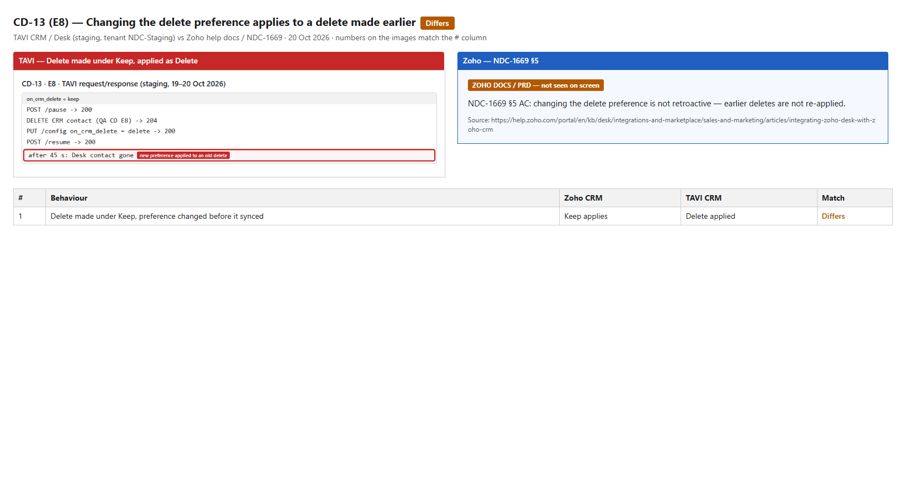
CD-13: TAVI (left) vs Zoho or the expected behaviour (right).
CD-14 · E9 / E4High (suggested)Delete preferences
A Desk contact deleted by the integration is not in the recycle bin and cannot be restored
With "Delete the corresponding Desk contact", deleting the CRM contact removes the Desk contact (GET answers 404), but the Desk contact is not in the Desk recycle bin. TAVI's own setting note says: "The Desk contact goes to the Desk recycle bin together with … its tickets … and can be restored from there." Data deleted this way cannot be restored.
Steps to reproduce
Settings → Preferences: "On deleting a CRM contact" = Delete the corresponding Desk contact.
Delete a linked QA CRM contact.
Desk → Settings → Recycle Bin (API GET /audit/recycle-bin/items?app_key=desk): look for the Desk contact.
Expected
The Desk contact (and its tickets) is in the Desk recycle bin and can be restored, as the setting promises (Zoho: "the record and its associates go to the Desk recycle bin").
Actual (TAVI)
Desk contact 404; no recycle-bin entry for it (200 newest Desk items checked); restore impossible.
Records
Desk contacts 94ce79a7, 9fc88446 (21 Oct)
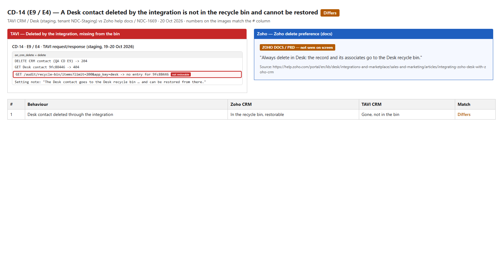
CD-14: TAVI (left) vs Zoho or the expected behaviour (right).
CD-15 · J4Low (suggested)Profile permissions
With "No access" the CRM pane is still offered and hangs on "Loading…"
An agent whose profile has No access to CRM contact data still sees the CRM rail icon and the "CRM Contact Info" pane; the pane stays on "Loading…" because the data calls are refused (403). No CRM data leaks, but NDC-1669 §6 says no CRM pane is shown.
Sign in as an agent with that profile; open a ticket of a linked contact.
Expected
No CRM pane or rail icon (NDC-1669 §6 AC), or a clear "Your profile cannot open this tab." state.
Actual (TAVI)
Pane offered; spinner "Loading…" never ends.
Records
Ticket #298 as fedelav803 (21 Oct); profile access restored after the check
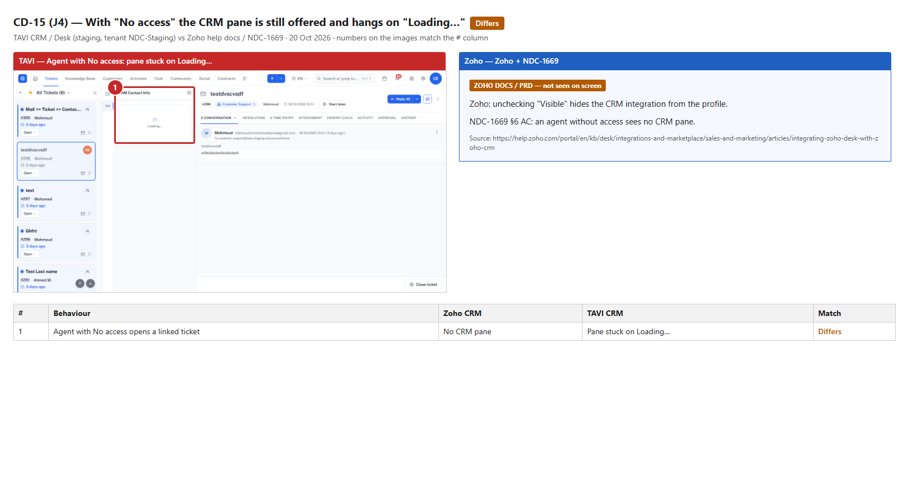
CD-15: TAVI (left) vs Zoho or the expected behaviour (right).
CD-16 · I18Low (suggested)CRM pane
The CRM pane error has no Retry
When the pane's CRM data cannot be loaded, it shows "Could not load this section." but offers no Retry; the agent has to reload the whole ticket. The app already has the "Retry" string.
Steps to reproduce
Block or fail the pane's /desk/integrations/crm/context/… calls (DevTools → block request URL).
Open a ticket of a linked contact and the CRM pane.
Expected
"Could not load this section." with a Retry button (spec I18).
Actual (TAVI)
Message only; no Retry.
Records
Ticket #298 (21 Oct)
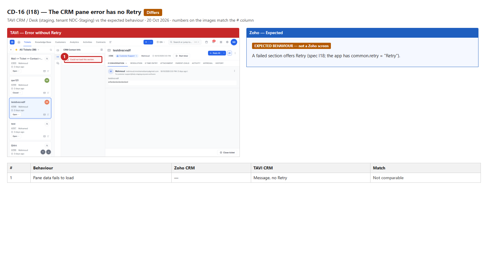
CD-16: TAVI (left) vs Zoho or the expected behaviour (right).
CD-17 · F8Low (suggested)Audit
Integration settings changes are not in the Audit Log
Many integration settings changes were saved on 20–21 Oct (pause, mappings, delete preferences, permissions, connect/disconnect), but the tenant Audit Log has no entry about the integration.
Steps to reproduce
Save any change on Desk → CRM ⇄ Desk Integration (e.g. a delete preference).
Open the tenant Audit Log (API GET /audit/events).
Expected
Who changed which integration setting and when (spec F8).
Actual (TAVI)
Events exist for other areas; none for the integration.
Records
21 Oct, 100 newest events checked
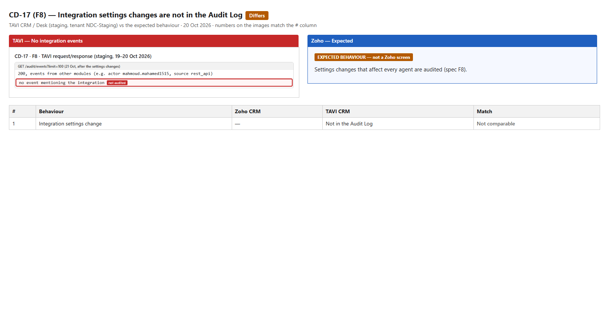
CD-17: TAVI (left) vs Zoho or the expected behaviour (right).
CD-18 · D6Medium (suggested)Contracts
"Lock CRM-owned fields on the contract" does not stop edits in Desk
With the lock on (the default), the contract name — which comes from the CRM deal name — can be changed in Desk and is saved. The next deal update then overwrites or conflicts with it. The setting exists precisely to stop that.
Steps to reproduce
Configuration → Contracts: "Lock CRM-owned fields on the contract" = on (default).
Win a QA deal so a Desk contract is created; give the contract a support plan, account and dates so it is valid.
Change the contract name in Desk (API PATCH /modules/{desk contracts}/records/{id} {contract_name}).
Expected
CRM-owned contract fields (contract name, value, owner, description, start date) are read-only in Desk while the lock is on: refused with a clear message.
Actual (TAVI)
200; the contract name is changed in Desk. With the lock off the edit also works (same result).
Records
Contract 3e021f5c of a QA deal (21 Oct, deleted after the run)
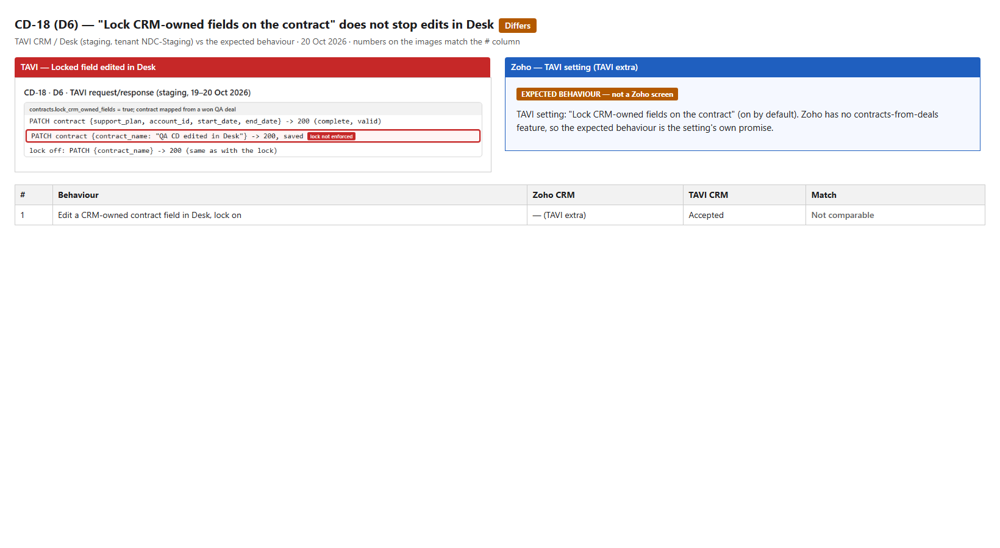
CD-18: TAVI (left) vs Zoho or the expected behaviour (right).
Not filed as bugs
Missing features: gaps 1–18 (9 from the gap analysis + 9 from the 21 Oct parity pass) — docs/crm-desk-integration/missing-report.html and zoho-parity-matrix.md.
Missing features Z1–Z9 (Products sync, list-view scope, secondary-email match, delete if no associates, all CRM fields in the pane, CRM ticket filters, mutual users / invite, CRM Contact Type rule condition, permission defaults and level names) — see docs/crm-desk-integration/missing-report.html. Z4 and Z9 were confirmed again by this run ("delete_if_no_associates" refused; every profile has Full Access right after Connect).
L2: /customers/contact/{id}/stats answers 0 for a CRM contact id — it expects the Desk id; the CRM card uses /stats, which counted the tickets correctly.
E3: with "Keep but unlink" the link stays listed with status "unlinked" and the Desk badge says Unlinked — correct (first reading was a test mistake).
L5: New ticket from CRM works with crm_module_key / crm_record_id (first attempt used wrong keys — test mistake).
B10 (inconclusive): the initial imports finished in about 3 s, too fast to see the progress text.
Minor wording: the API message for a second Sync all is "A initial_customers run is already queued or running." (raw run kind).